数据可视化
本章介绍基于ggplot2包的数据可视化基本语法，主要介绍几个常用图形的语法。
1 加载包
案例数据为Palmer Archipelago三个岛屿上企鹅的身体测量数据，这是一个tibble类型的数据集：
penguins# A tibble: 344 × 8
species island bill_length_mm bill_depth_mm flipper_length_mm body_mass_g
<fct> <fct> <dbl> <dbl> <int> <int>
1 Adelie Torgersen 39.1 18.7 181 3750
2 Adelie Torgersen 39.5 17.4 186 3800
3 Adelie Torgersen 40.3 18 195 3250
4 Adelie Torgersen NA NA NA NA
5 Adelie Torgersen 36.7 19.3 193 3450
6 Adelie Torgersen 39.3 20.6 190 3650
7 Adelie Torgersen 38.9 17.8 181 3625
8 Adelie Torgersen 39.2 19.6 195 4675
9 Adelie Torgersen 34.1 18.1 193 3475
10 Adelie Torgersen 42 20.2 190 4250
# ℹ 334 more rows
# ℹ 2 more variables: sex <fct>, year <int>2 ggplot基本语法
下面我们通过相关性散点图可视化企鹅的鳍长度和体重之间的关系，并通过不同的颜色和形状标注企鹅的种类。
ggplot(
penguins,
aes(x = flipper_length_mm,
y = body_mass_g,
color = species,
shape = species)
) +
geom_point() +
geom_smooth(method = "lm")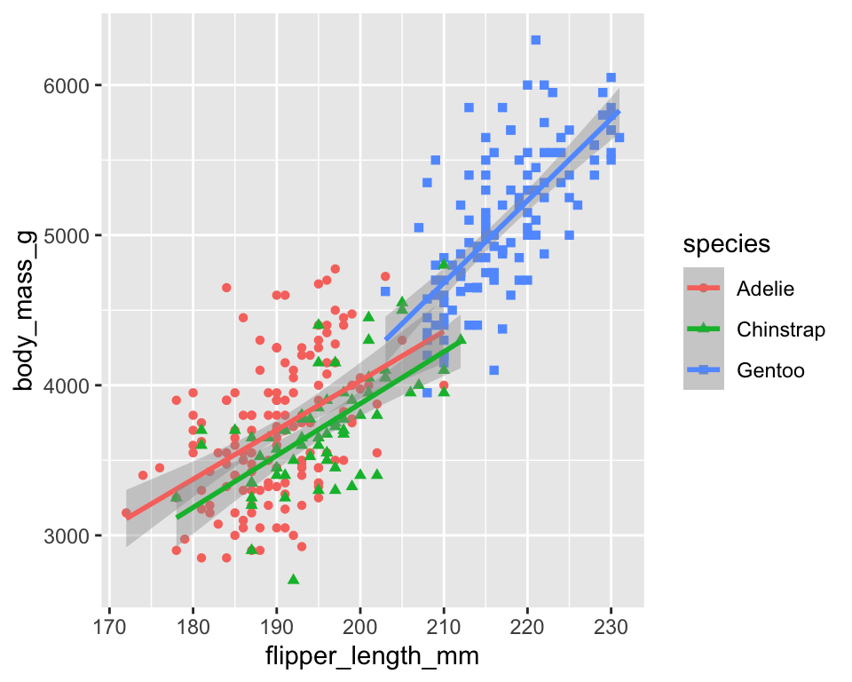
aes() 函数定义了如何将数据集中的变量映射到绘图的可视化属性（即美学，aesthetics）上。
可以看到，它给每个不同的企鹅类型都拟合了一条相关性趋势线。如果我们需要在整个数据集中拟合一条趋势线，则需要将区分企鹅类型的color = species和shape = species参数从全局的ggplot()中移动到geom_point()中：
ggplot(
data = penguins,
aes(x = flipper_length_mm,
y = body_mass_g)
) +
geom_point(aes(color = species, shape = species)) +
geom_smooth(method = "lm")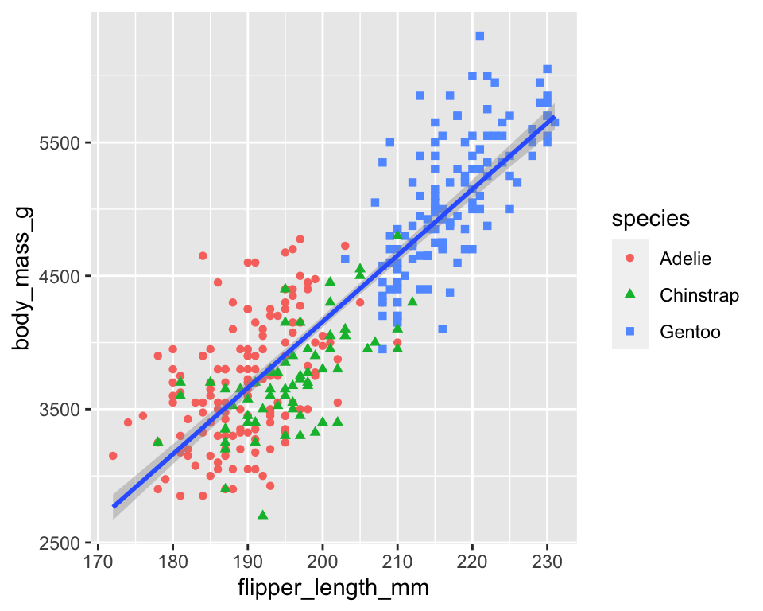
这是因为在ggplot()中定义了全局级别的美学映射后，这些映射会向下传递到绘图的每个后续geom层。不过，ggplot2 中的每个 geom 函数也可以接受一个映射参数，这样就可以在局部层级添加美学映射，并将其添加到从全局层级继承的映射中。由于我们希望根据企鹅种类定义每个点的颜色和形状，但不希望分别为每个企鹅种类绘制拟合线，因此我们应该只为 geom_point()指定 color = species和shape = species。
最后，为其添加文字并调用调色板：
ggplot(
penguins,
aes(x = flipper_length_mm, y = body_mass_g)
) +
geom_point(aes(color = species, shape = species)) +
geom_smooth(method = "lm") +
labs(
title = "Body mass and flipper length",
subtitle = "Dimensions for Adelie, Chinstrap, and Gentoo Penguins",
x = "Flipper length (mm)",
y = "Body mass (g)",
) +
scale_color_colorblind()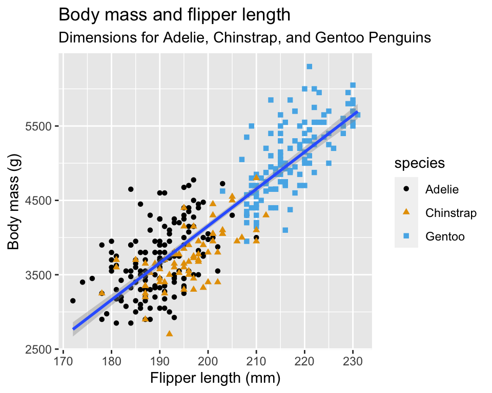
3 可视化分布
3.1 可视化分类变量的分布
用条形图可视化企鹅类型的分布：
按照每个类型企鹅数量的多少重新排序条形图。可以通过fct_infreq()对“species”按照其频数重新排序：
ggplot(penguins,
aes(x = fct_infreq(species))) +
geom_bar(fill = "red")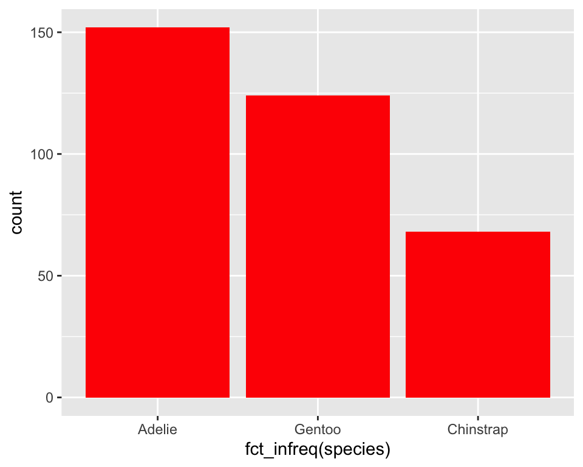
3.2 可视化数值变量的分布
通过直方图可视化企鹅体重对分布情况：
ggplot(penguins,
aes(x = body_mass_g)) +
geom_histogram(binwidth = 200,
fill = "darkblue") 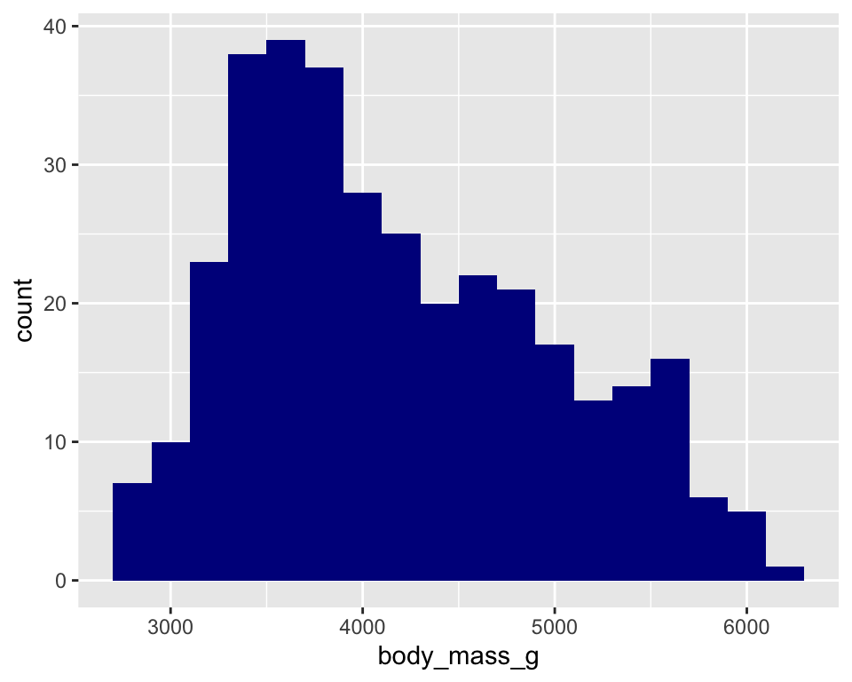
密度图是数值变量分布的另一种可视化方式。密度图是直方图的平滑化版本，与直方图相比，它显示的细节较少，但能让人更容易快速了解分布的形状。
ggplot(penguins,
aes(x = body_mass_g)) +
geom_density(color = "darkblue")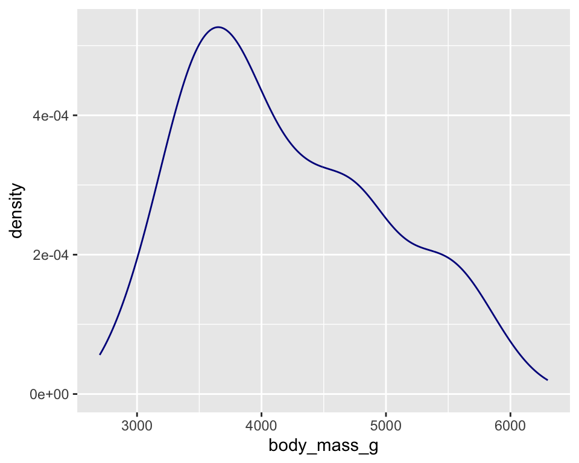
4 可视化关系
4.1 一个数值变量和一个分类变量
通过箱型图比较不同种类企鹅的体重：
ggplot(penguins,
aes(x = species,
y = body_mass_g)) +
geom_boxplot()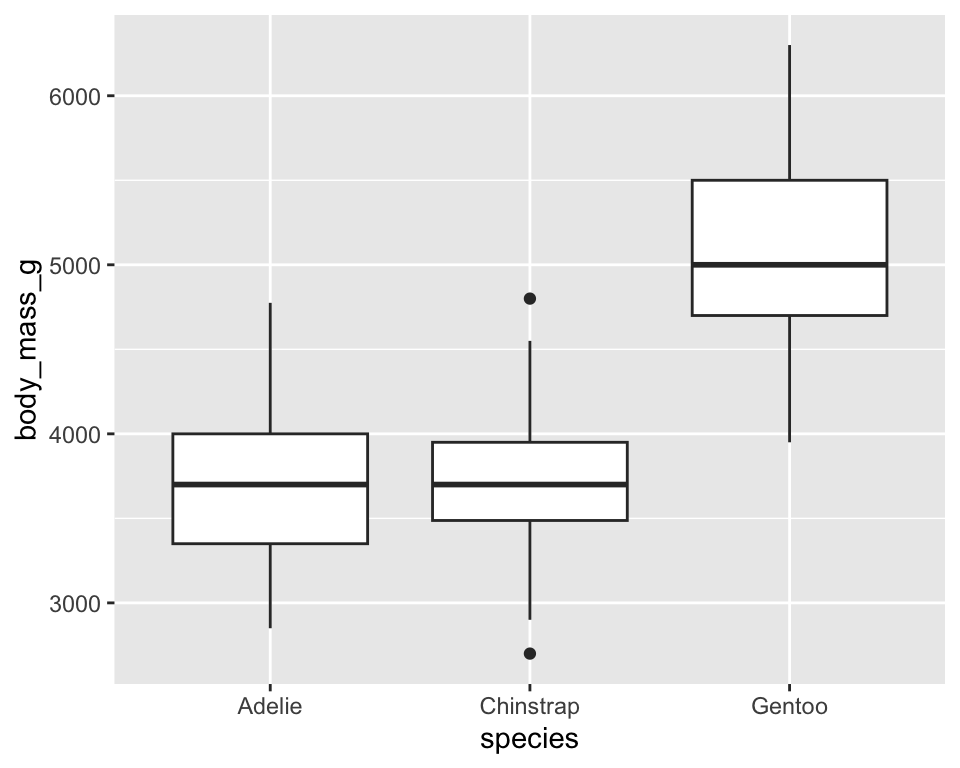

密度图：
ggplot(penguins,
aes(x = body_mass_g,
color = species,
fill = species)) +
geom_density(alpha = 0.5)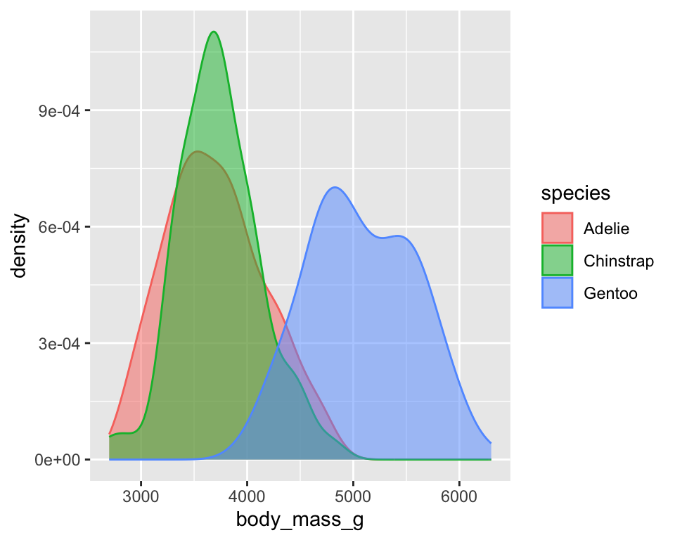
4.2 两个分类变量
通过堆叠条形图比价不同岛屿上的企鹅类型分布情况：
可以通过在 geom 中设置 position = "fill"（填充）绘制相对频率图，它更适用于比较各岛屿的物种分布情况，因为它不会受到各岛屿企鹅数量不等的影响。
4.3 两个数值变量
在上面的ggplot基本语法中我们已经介绍了通过散点图展示两个数值型变量关系的语法：
ggplot(
penguins,
aes(x = flipper_length_mm,
y = body_mass_g)
) +
geom_point() +
geom_smooth(method = "lm") 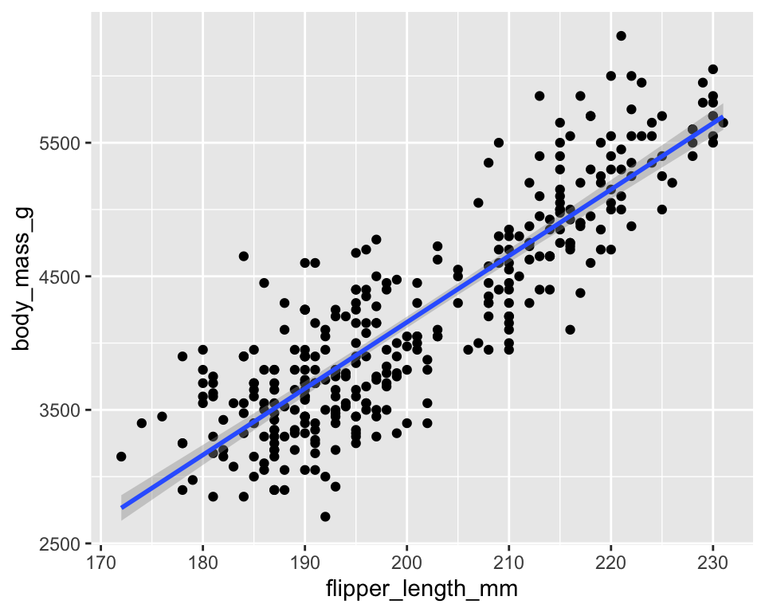
4.4 两个以上变量
正如我们在ggplot基本语法中所看到的，我们可以通过将更多变量映射到其他美学元素中，从而将更多变量整合到散点图中。例如，在下面的散点图中，点的颜色代表企鹅种类，点的形状代表所在岛屿：
ggplot(penguins,
aes(x = flipper_length_mm,
y = body_mass_g)) +
geom_point(aes(color = species,
shape = island))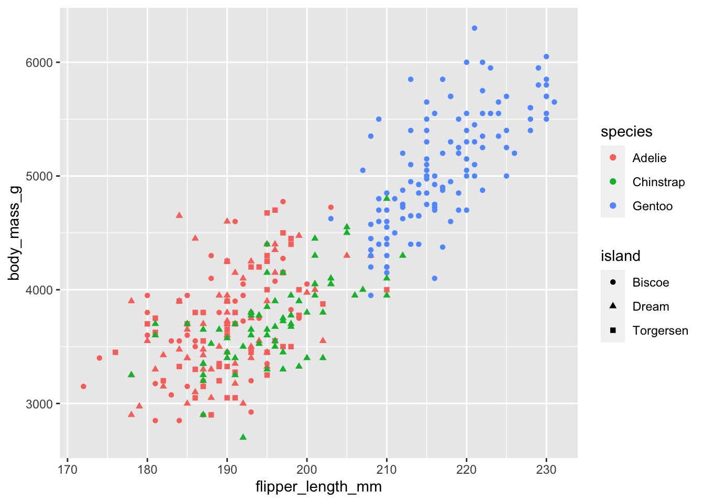
然而，在绘图中添加过多的美学映射会使绘图变得杂乱无章，难以理解。另一种方法对分类变量尤为有用，那就是通过facet_wrap()绘制分面图，即分别显示一个数据子集的子绘图。
ggplot(penguins,
aes(x = flipper_length_mm,
y = body_mass_g)) +
geom_point(aes(color = species,
shape = species)) +
geom_smooth(method = "lm") +
facet_wrap(~island)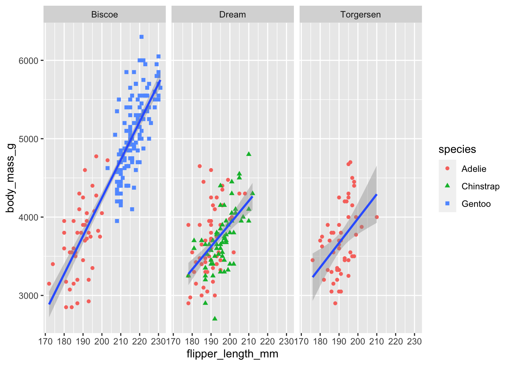